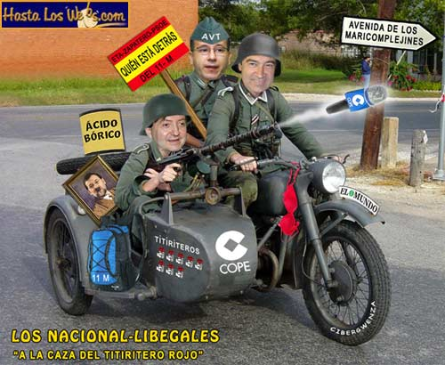

Libega
 De: La Frikipedia, la enciclopedia extremadamente seria.
De: La Frikipedia, la enciclopedia extremadamente seria.
El libegalismo es una ideología creada por quien aún hoy es su principal estrella el prócer de la maledicencia liberalismo, es una variante del fascismo, pero elevado a la enésima potencia. Sus premisas pueden variar según gobiernen los fachas o los rojos:
 Nacional libegales en acción
- Es necesario dejar claro que la verdad absoluta es la que dicen los libegales; y quien diga lo contrario, miserable.
- Tras un atentado terrorista, deben ser los políticos los que investiguen, no los jueces ni la policía (que bastante tienen con el Hombre del Saco).
- Paul Anco es responsable de todos los males desde el nacimiento de Cyberjesus; después de él, la culpa la tienen los Objetivos.
- Objetivo: personaje elegido por la Gran Logia Libegal (más abajo) a quien se debe culpar de todos los males. Puede que en un determinado momento, los ataques se conviertan en elogios hacia el objetivo por descubrimiento de un objetivo mejor, y puede que se vuelvan a convertir en ataques, halagos, etc, dependiendo de la temperatura a la sombra en Villacastaña. Ejemplos de objetivos de la Logia son:
- Si una banda terrorista quiere negociar el abandono de las armas, esto sólo está bien si negocian los fachas.
Gran Logia Libegal
Presidida por su fundador Jimenetxe, fue fundada en 1993, cuando se dieron cuenta de que Conspir Ánson y el actor porno Pedro Jeta Ramírez, aunque actualmente el monárquico ha abandonado la Logia, y su puesto se lo han repartido entre Pío Mao y Hangla Mangla.
Autor(es):
- Jarlaxle
- SITORELOADED
- MURO DE AGUAS
- Cañonero
- Aque
- Khazike Khashondo
- Romeo 62
- Oinancie DIA
Frikipedia 2005-2016, Licencia
GFDL 1.2 - Extraído por FrikiLeaks